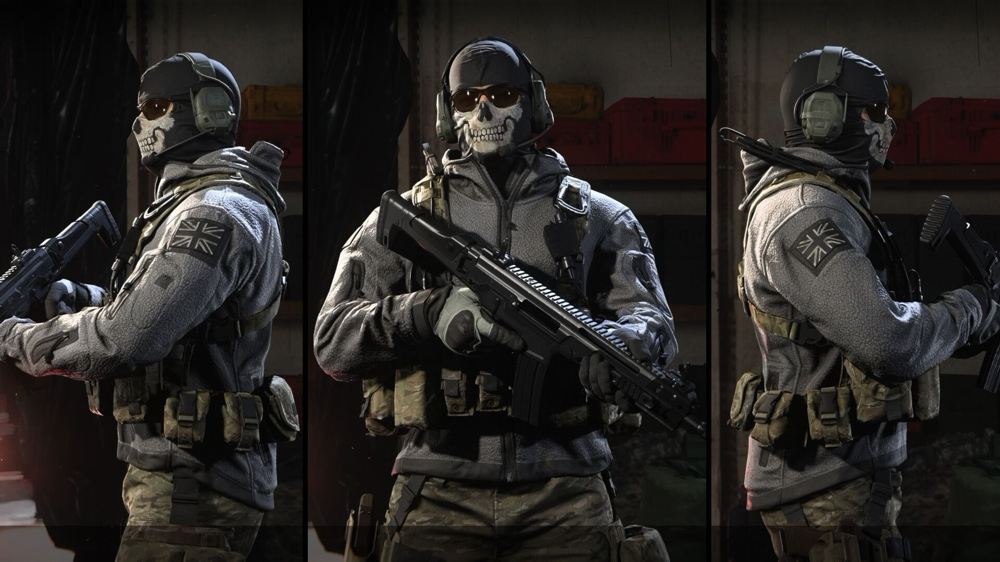

Outro Easter egg está presente na missão Flashpoint da campanha do MW3, e uma referência direta ao MW2 original. Se você prestar atenção extra em Ghost no final da missão, notará que ele está vestindo uma roupa especial. Sua skin clássica de MW2 é vista nele quando ele aparece com Shepherd quando eles vêm buscar Price, Soap e o capturado Makarov. A skin clássica levará os jogadores veteranos de volta à cena em que Ghost morre nas mãos de ninguém menos que Shepherd.
